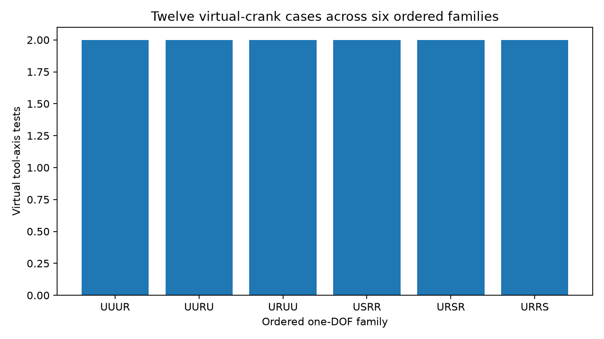

Focus: enumerate the six ordered one-DOF families and the twelve virtual-tool-axis test cases.

| Family | Origin | Note |
|---|---|---|
| UUUR | SUUR -> UUUR fiber | Two universal joints plus one revolute after tool-U slicing. |
| UURU | SURU -> UURU fiber | Mixed placement of the single revolute between universal joints. |
| URUU | SRUU -> URUU fiber | Single revolute nearest ground when loop is read from tool U. |
| USRR | SSRR -> USRR fiber | Equivalent multiset to RRUS; order preserved for inversion-sensitive analysis. |
| URSR | SRSR -> URSR fiber | Alternating U-R-S-R order in the one-DOF fiber. |
| URRS | SRRS -> URRS fiber | S joint is deepest in the chain away from the tool U. |
| Family | Tool axis | Case slug |
|---|---|---|
| UUUR | a | uuur_tool_a |
| UUUR | b | uuur_tool_b |
| UURU | a | uuru_tool_a |
| UURU | b | uuru_tool_b |
| URUU | a | uruu_tool_a |
| URUU | b | uruu_tool_b |
| USRR | a | usrr_tool_a |
| USRR | b | usrr_tool_b |
| URSR | a | ursr_tool_a |
| URSR | b | ursr_tool_b |
| URRS | a | urrs_tool_a |
| URRS | b | urrs_tool_b |
{kind=link}
{kind=link}
{kind=link}
{kind=link}
{kind=link}
{kind=link}